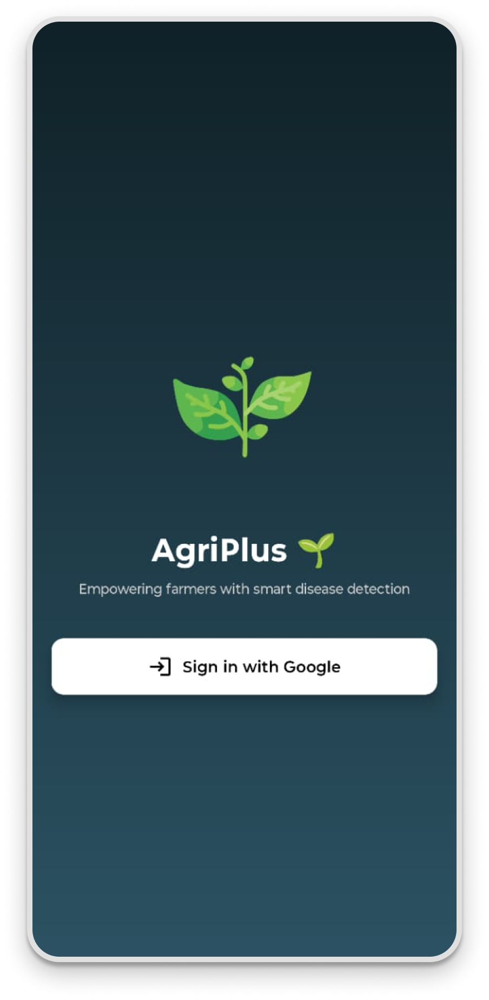
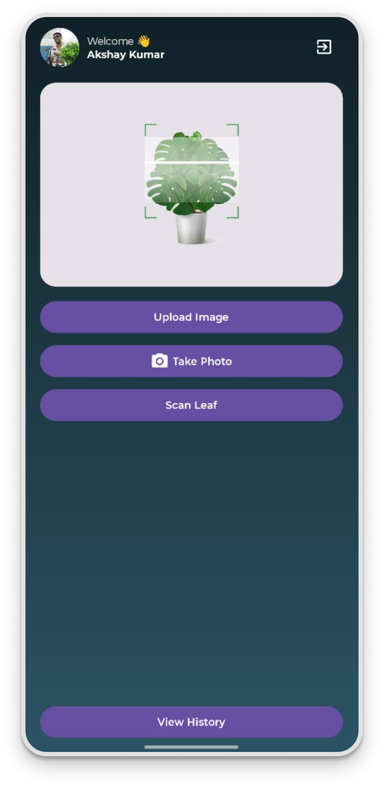
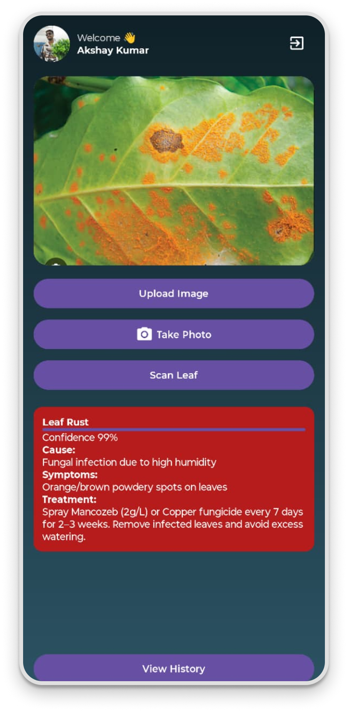
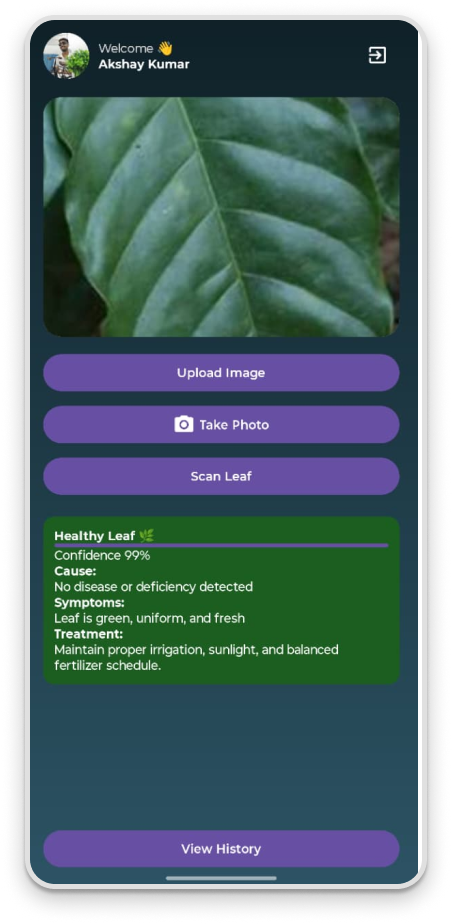
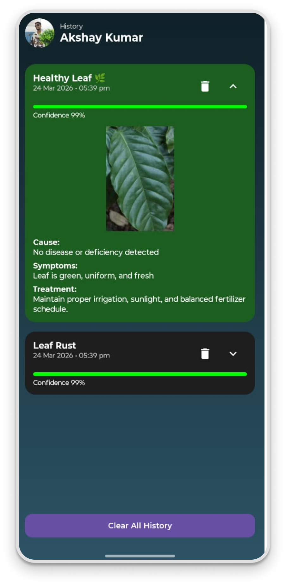

Detect coffee plant diseases and nutrient deficiencies instantly by scanning leaves using artificial intelligence. AgriPlus provides accurate diagnosis, early detection, and actionable treatment solutions for farmers and planters.
Identify problems like nitrogen deficiency, leaf rust, mite damage and more before they affect crop yield.
AgriPlus empowers farmers with intelligent crop monitoring. By combining machine learning and image processing, the system helps identify diseases and deficiencies early, reducing crop loss and increasing productivity. Farmers can make informed decisions quickly and efficiently using real-time insights.





Agriculture requires precision and timing. AgriPlus ensures both by delivering accurate plant health insights instantly.
Early detection leads to better treatment, improved yield, and sustainable farming practices.
APK v1 (Beta Release)
Download AgriPlus APK (v1 Beta)